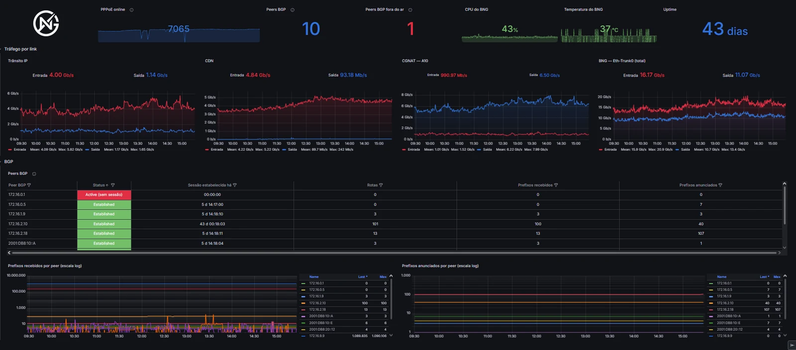

Monitoramento de rede e análise de dados para provedores.
Acompanhe a rede em tempo real e transforme os dados do ERP, das OLTs e das planilhas em painéis claros para diretoria, NOC, financeiro e comercial.

Os dados existem, mas estão espalhados
Sistemas isolados
ERP, OLTs, monitoramento e planilhas não conversam entre si.
Relatórios manuais
Horas gastas montando números que já chegam desatualizados.
Decisões no escuro
Churn, inadimplência e falhas de rede aparecem tarde demais.
Rede e dados do provedor sob controle
Nossos três produtos principais cobrem a operação e o mapeamento da rede e a gestão do negócio. Ao redor deles, oferecemos soluções para necessidades específicas do provedor.
Monitoramento de rede
O NOC enxerga a rede inteira em tempo real, do núcleo até a ONU do cliente.
- Tráfego e ocupação de links e OLTs
- Sessões BGP, BNG e concentradores
- Sinal óptico das ONUs
- Latência, perda de pacotes e alarmes
Análise de dados
ERP, planilhas e sistemas integrados em painéis para diretoria, financeiro e comercial.
- MRR, faturamento e inadimplência
- Cancelamentos e churn
- Vendas, ativações e base por plano
- Atendimento técnico e SLA
Mapeamento de redes
A rede óptica no mapa, com o impacto de cada rompimento antes de a equipe sair.
- POPs, CEOs, CTOs, cabos e clientes no mapa
- Simulação de rompimentos e clientes afetados
- Diagrama de fusão de cada caixa
- Rastreio de sinal da OLT até o cliente
Outras soluções
Automações para o provedor
Tarefas repetitivas automatizadas, como alertas no WhatsApp que já chegam com o diagnóstico da queda.
Soluções sob medida
Desenvolvemos a ferramenta a partir da dor do seu provedor, quando nenhuma solução pronta resolve.
Uma visão única do provedor
Juntamos as fontes que você já tem, tratamos e modelamos os dados, e cada área recebe o painel de que precisa.
Integração, tratamento e modelagem dos dados
Conectados aos sistemas que você já usa
Integramos os principais ERPs do mercado de provedores, além de ferramentas de monitoramento, bancos de dados e planilhas.
Na camada de rede, trabalhamos com Zabbix e Grafana.
Como trabalhamos
Diagnóstico
Entendemos os indicadores que importam para o seu provedor.
Integração
Conectamos ERP, rede e as demais fontes de dados.
Construção
Desenvolvemos e validamos os painéis com a sua equipe.
Evolução
Acompanhamos, ajustamos e criamos novos painéis.
Painéis e automações que construímos
Escolha um exemplo e veja o problema que ele resolve na operação do provedor. Todos são adaptados aos seus sistemas e indicadores. Os dados e identificações exibidos são ilustrativos.
Por que a NetGauge
Vivemos a rotina do provedor
OLT, PPPoE, ARPU e churn fazem parte do nosso dia a dia, não só do vocabulário.
Rede e negócio juntos
Monitoramento da rede e dados de financeiro e comercial com o mesmo parceiro.
Atualização automática
Chega de planilhas montadas à mão todo mês.
Feito para a sua operação
Painéis, automações e ferramentas definidos junto com a sua equipe.
Quem constrói é quem atende
Somos dois profissionais que vivem a rotina de rede e gestão de provedor de internet. As soluções da NetGauge nasceram de problemas reais da operação, e agora levamos esse trabalho para outros provedores. Você fala direto com quem desenvolve, sem intermediários.
Lucas Farias
NOC, TI e análise de dados
Mais de 3 anos em provedor de internet, trabalhando com Zabbix, OLTs, BNG e Mikrotik.
David Dimas
NOC, TI e análise de dados
Mais de 3 anos em provedor de internet, trabalhando com Zabbix, OLTs, BNG e Mikrotik.
Veja funcionando antes de decidir
Estamos abrindo a NetGauge para os primeiros provedores e queremos construir essa relação com transparência.
Demonstração ao vivo
Uma conversa rápida mostrando os painéis e as automações funcionando, com dados de demonstração.
Piloto com os seus dados
Assim que o acesso aos dados é liberado, entregamos em 3 dias um primeiro painel com os dados do seu provedor, para você avaliar na prática.
Condição de lançamento
Os primeiros provedores têm acesso a pacotes promocionais, em troca de feedback e, se gostarem, de um depoimento.
Perguntas frequentes
Funciona com o meu ERP?
Trabalhamos com os ERPs mais usados por provedores, como IXC Soft, SGP, MK-Auth, Voalle e Hubsoft. Se o seu sistema permite acesso aos dados, por API ou banco de dados, avaliamos a integração na primeira conversa.
Preciso trocar algum sistema?
Não. Conectamos aos sistemas que o provedor já usa: ERP, Zabbix, OLTs e planilhas.
Como fica a segurança do acesso aos meus sistemas?
Usamos apenas acesso de leitura ao banco de dados ou à API dos seus sistemas, então nada é alterado do lado do provedor. Os dados de clientes são tratados conforme a LGPD.
Vocês são uma equipe pequena. Como funciona o suporte?
O suporte é direto com o desenvolvedor: você fala com quem construiu a solução, sem intermediários.
Tem fidelidade?
Sim, o contrato tem fidelidade de 6 meses. Antes de fechar, você pode ver a demonstração e avaliar o primeiro painel com os seus dados.
Quanto custa?
Depende das fontes de dados e dos painéis de que o provedor precisa. Na demonstração entendemos a sua operação e enviamos uma proposta.